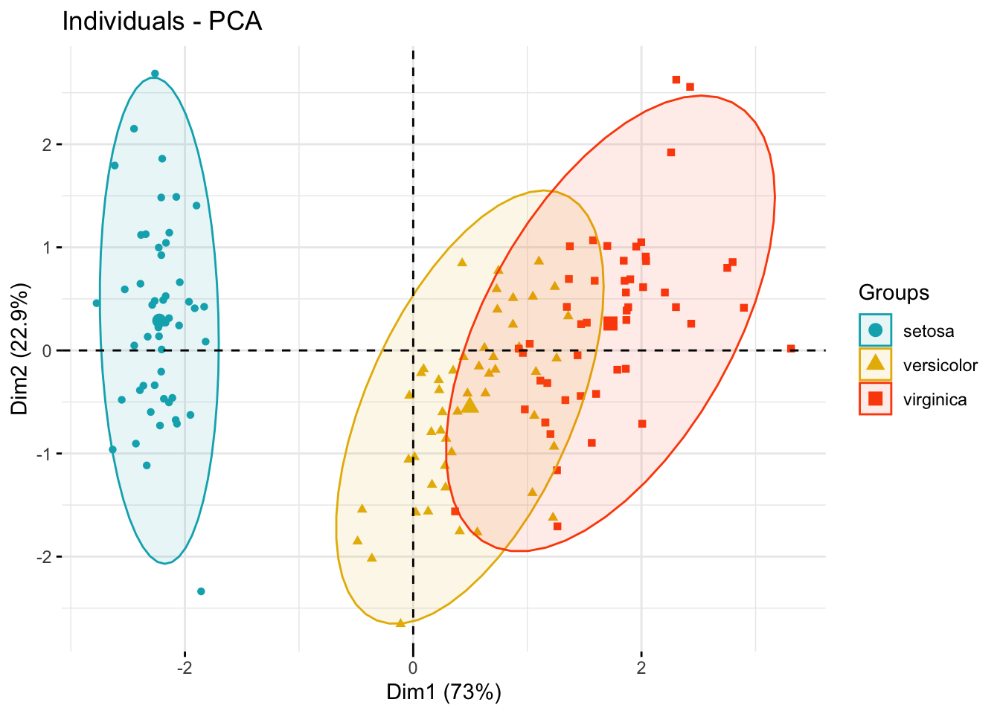
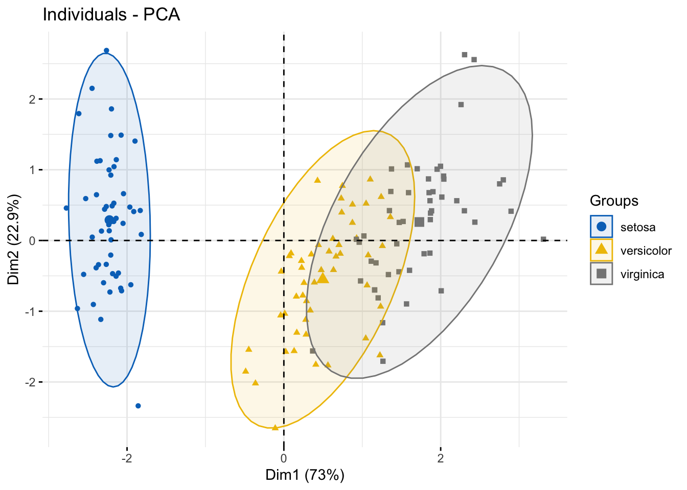
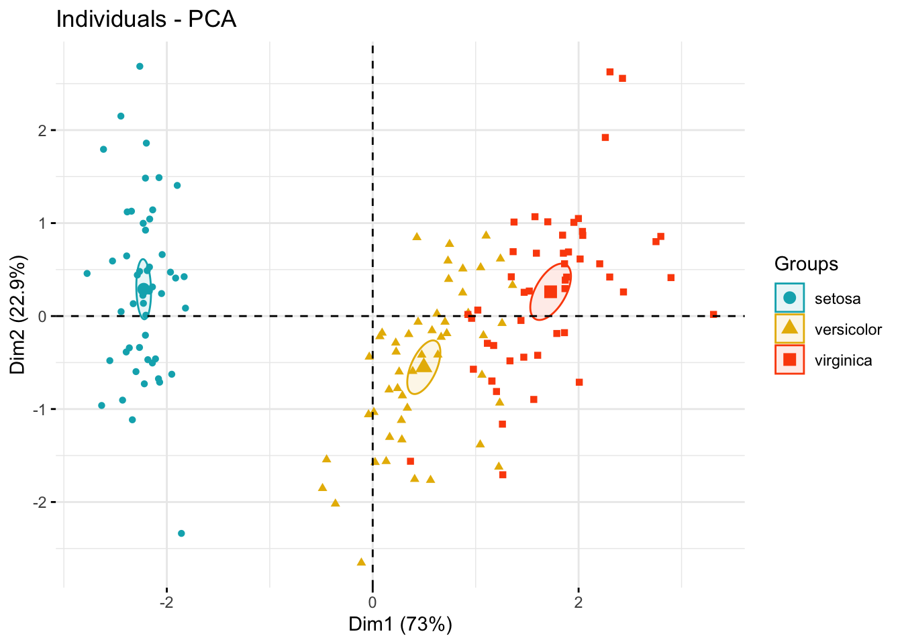
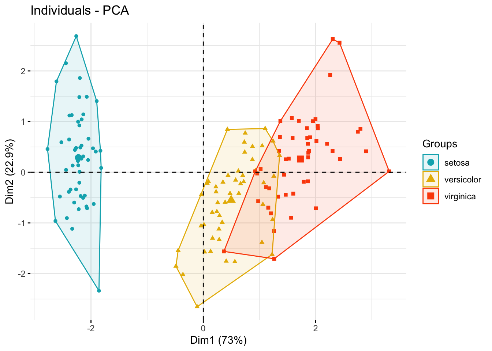
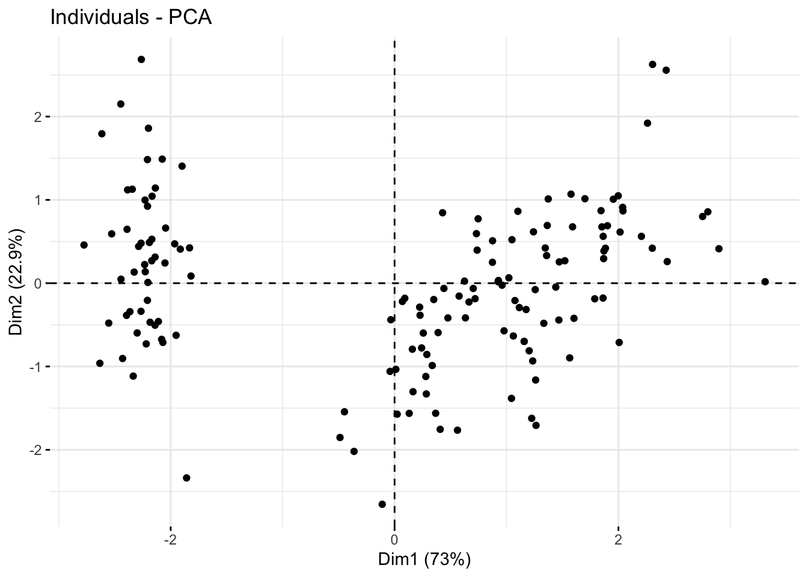
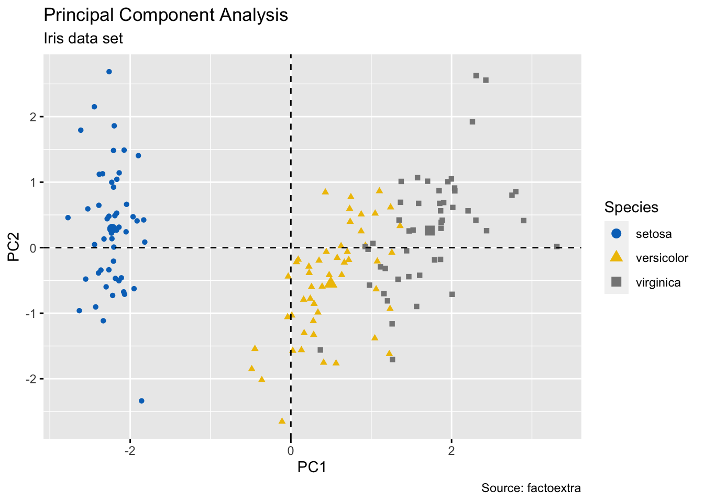
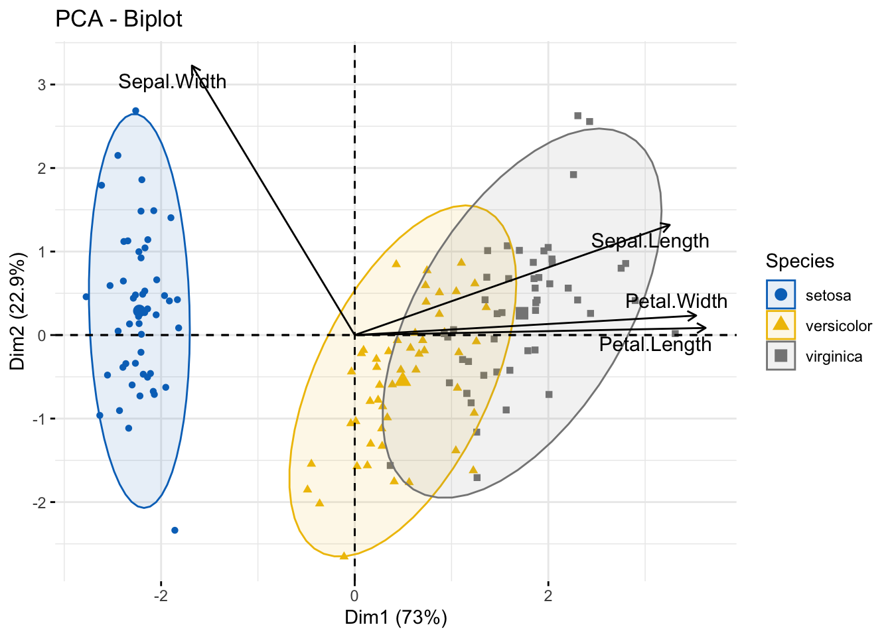
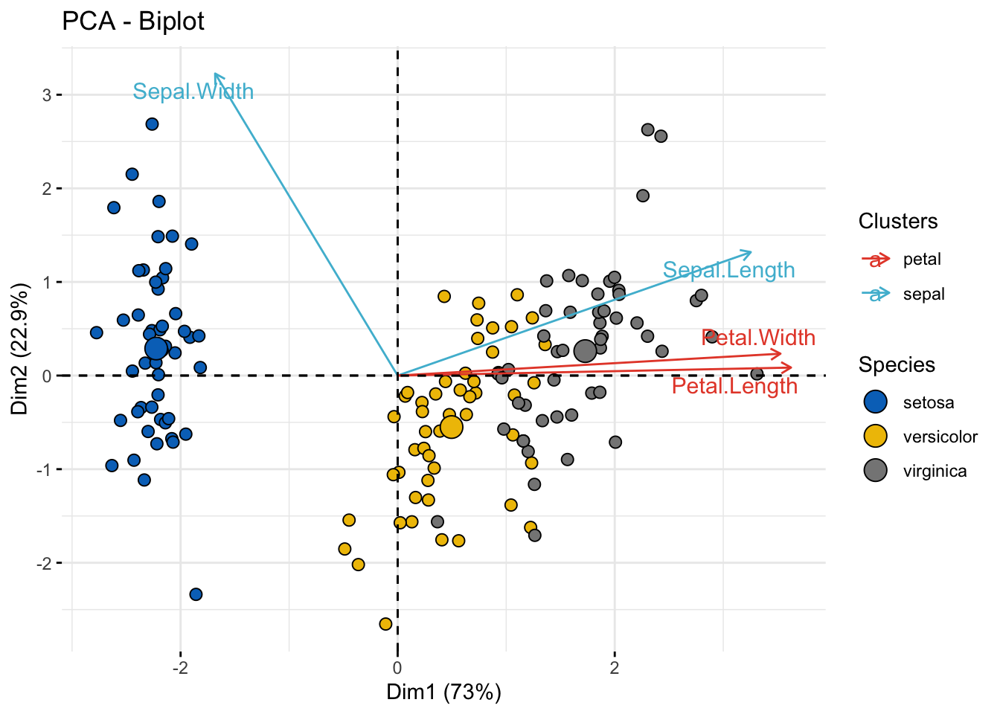
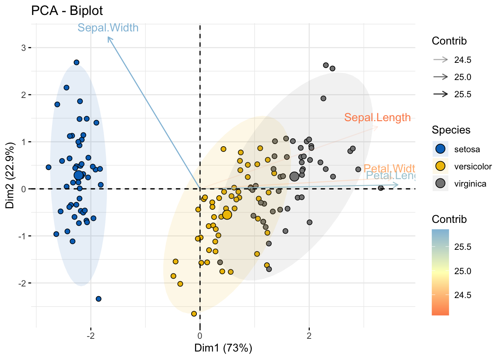

![]()
### Load packages
library(pacman)
p_load(
tidyverse, # tidy data
FactoMineR, # compute principal component methods
factoextra, # extract, visualize and interpretate the results
corrplot # visualize cos2 of variables
)
### compute pca
head(iris, 3)
## Sepal.Length Sepal.Width Petal.Length Petal.Width Species
## 1 5.1 3.5 1.4 0.2 setosa
## 2 4.9 3.0 1.4 0.2 setosa
## 3 4.7 3.2 1.3 0.2 setosa
# The variable Species (index = 5) is removed
# before PCA analysis
iris_pca <- PCA(iris[,-5], graph = FALSE)
iris_pca
## **Results for the Principal Component Analysis (PCA)**
## The analysis was performed on 150 individuals, described by 4 variables
## *The results are available in the following objects:
##
## name description
## 1 "$eig" "eigenvalues"
## 2 "$var" "results for the variables"
## 3 "$var$coord" "coord. for the variables"
## 4 "$var$cor" "correlations variables - dimensions"
## 5 "$var$cos2" "cos2 for the variables"
## 6 "$var$contrib" "contributions of the variables"
## 7 "$ind" "results for the individuals"
## 8 "$ind$coord" "coord. for the individuals"
## 9 "$ind$cos2" "cos2 for the individuals"
## 10 "$ind$contrib" "contributions of the individuals"
## 11 "$call" "summary statistics"
## 12 "$call$centre" "mean of the variables"
## 13 "$call$ecart.type" "standard error of the variables"
## 14 "$call$row.w" "weights for the individuals"
## 15 "$call$col.w" "weights for the variables"1 Compute PCA
2 Color individuals by groups
fviz_pca_ind(
iris_pca,
geom.ind = "point", # show points only (nbut not "text")
col.ind = iris$Species, # color by groups
palette = c("#00AFBB", "#E7B800", "#FC4E07"),
addEllipses = TRUE, # Concentration ellipses
legend.title = "Groups"
)
3 Add confidence ellipses
fviz_pca_ind(
iris_pca,
geom.ind = "point",
col.ind = iris$Species,
palette = c("#00AFBB", "#E7B800", "#FC4E07"),
addEllipses = TRUE, ellipse.type = "confidence",
legend.title = "Groups"
)
### use color from jco
fviz_pca_ind(
iris_pca,
label = "none", # hide individual labels
habillage = iris$Species, # color by groups
addEllipses = TRUE, # Concentration ellipses
palette = "jco"
)
# Add confidence ellipses
fviz_pca_ind(
iris_pca,
geom.ind = "point",
col.ind = iris$Species, # color by groups
palette = c("#00AFBB", "#E7B800", "#FC4E07"),
addEllipses = TRUE,
ellipse.type = "confidence",
legend.title = "Groups"
)
# Convex hull
fviz_pca_ind(
iris_pca,
geom.ind = "point",
col.ind = iris$Species, # color by groups
palette = c("#00AFBB", "#E7B800", "#FC4E07"),
addEllipses = TRUE,
ellipse.type = "convex",
legend.title = "Groups"
)
4 Group mean points
fviz_pca_ind(
iris_pca,
geom.ind = "point", # show points only (but not "text")
group.ind = iris$Species, # color by groups
legend.title = "Groups",
mean.point = FALSE
)
5 Graphical parameters
To change easily the graphical of any ggplots, you can use the function ggpar() [ggpubr package]
The graphical parameters that can be changed using ggpar() include:
- Main titles, axis labels and legend titles
- Legend position. Possible values: “top”, “bottom”, “left”, “right”, “none”.
- Color palette.
- Themes. Allowed values include: theme_gray(), theme_bw(), theme_minimal(), theme_classic(), theme_void().
ind_p <- fviz_pca_ind(iris_pca, geom = "point", col.ind = iris$Species)
ggpubr::ggpar(ind_p,
title = "Principal Component Analysis",
subtitle = "Iris data set",
caption = "Source: factoextra",
xlab = "PC1", ylab = "PC2",
legend.title = "Species", legend.position = "top",
ggtheme = theme_gray(), palette = "jco"
)
6 Biplot
fviz_pca_biplot(
iris_pca,
col.ind = iris$Species,
palette = "jco",
addEllipses = TRUE,
label = "var",
col.var = "black",
repel = TRUE,
legend.title = "Species"
) 
7 Color by groups
fviz_pca_biplot(
iris_pca,
# Fill individuals by groups
geom.ind = "point",
pointshape = 21,
pointsize = 2.5,
fill.ind = iris$Species,
col.ind = "black",
# Color variable by groups
col.var = factor(c("sepal", "sepal", "petal", "petal")),
legend.title = list(fill = "Species", color = "Clusters"),
repel = TRUE # Avoid label overplotting
) +
ggpubr::fill_palette("jco")+ # Indiviual fill color
ggpubr::color_palette("npg") # Variable colors
fviz_pca_biplot(
iris_pca,
# Individuals
geom.ind = "point",
fill.ind = iris$Species,
col.ind = "black",
pointshape = 21,
pointsize = 2,
palette = "jco",
addEllipses = TRUE,
# Variables
alpha.var ="contrib",
col.var = "contrib",
gradient.cols = "RdYlBu",
legend.title = list(
fill = "Species",
color = "Contrib",
alpha = "Contrib"
)
)